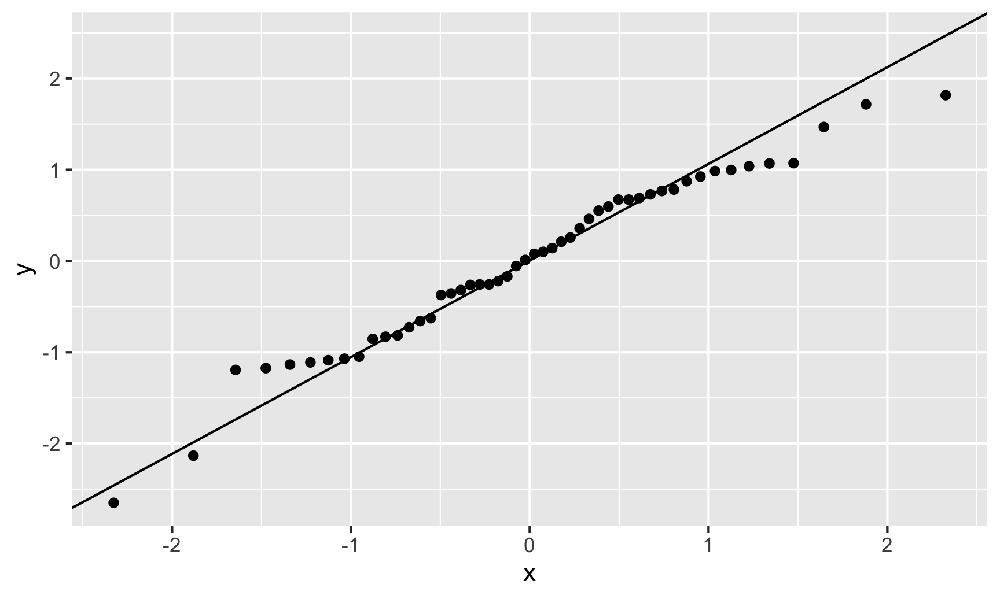
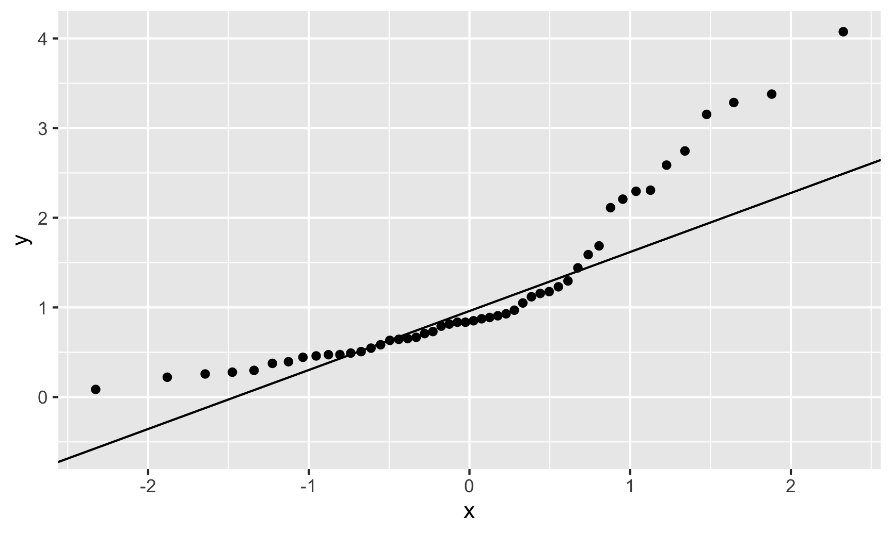
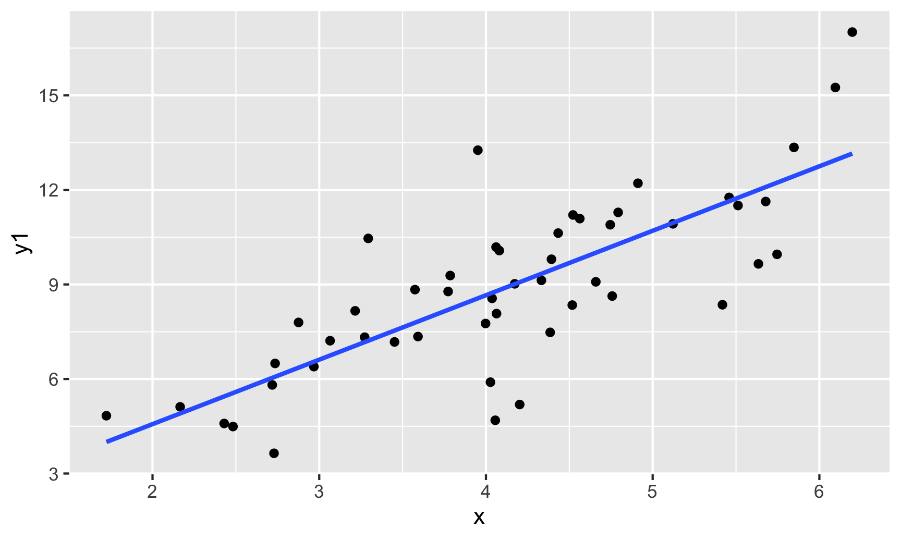
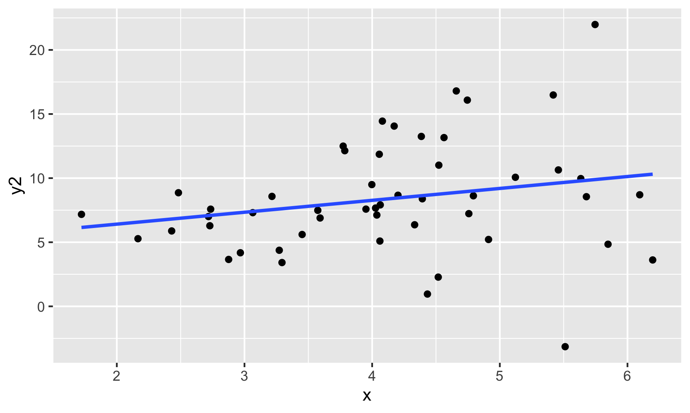
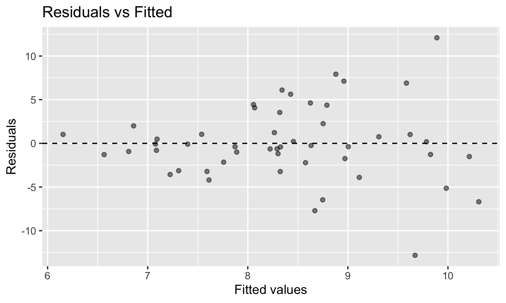
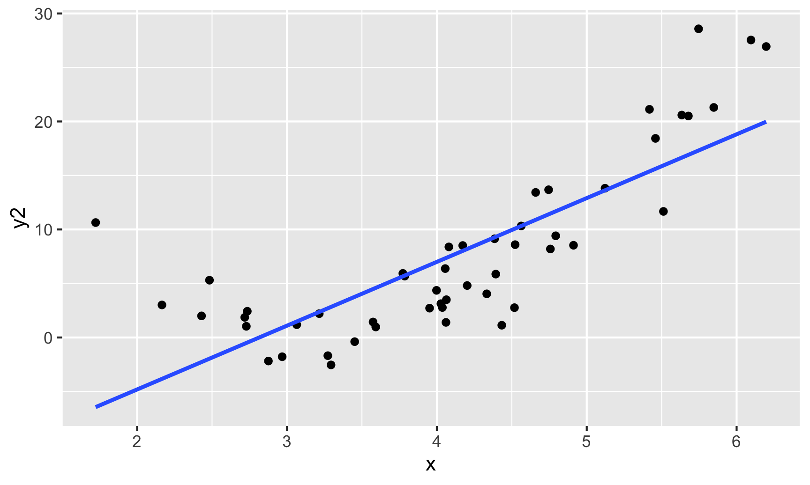
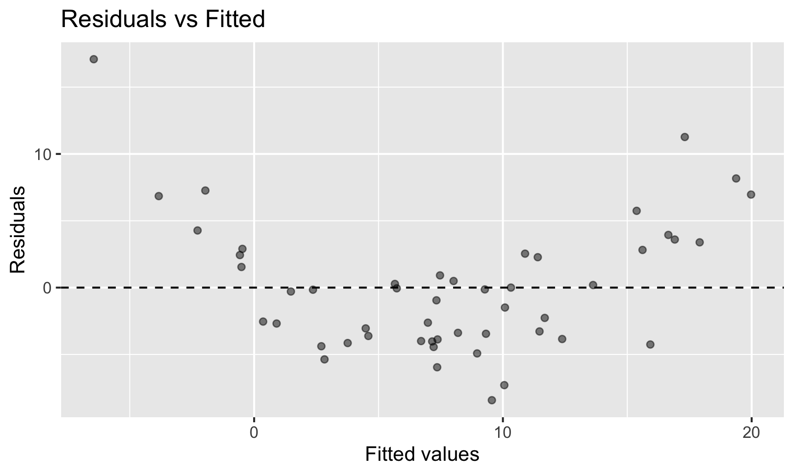
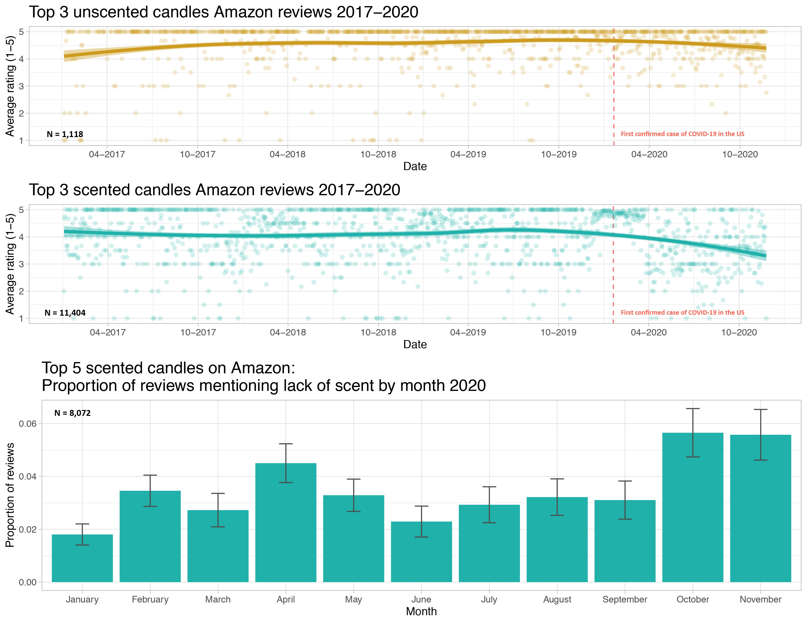

Inference for Regression I
Grayson White
Math 141
Week 11 | Fall 2025
Goals for Today
- Review two types of inference
- Recall concepts from linear regression
- Begin inference for linear regression
- Today’s goal: introduction and recallation of linear regression
- Next week: Deep dive + simulation based approach to inference for linear regression
But first: What class(es) should I take next in Statistics?
- Available to you right after Math 141:
- Math 241: Data Science
- Offered this spring! A deep dive into all things data. Some topics we’ll think about next semester include: (interactive) data visualization, writing your own R packages, dashboarding, spatial data, ethics, text analysis, and much more!
- No exams, no daily homework! Weekly lab assignments and a few projects through the semester.
- Math 243: Statistical Learning
- Offered next year. A deep dive into statistical modeling.
- Math 241: Data Science
- Applied courses further down the road:
- Math 343: Practicum and Math 346: Bayesian Stats
- Theory courses further down the road:
- Math 391: Probability, Math 392: Mathematical Statistics, and Math 394: Causal Inference
Have Learned Two Routes to Statistical Inference
Which is better?
Is Simulation-Based Inference or Theory-Based Inference better?
Depends on how you define better.
- If better = Leads to better understanding:
→ Research tends to show students have a better understanding of p-values and confidence from learning simulation-based methods.
- If better = More flexible/robust to assumptions:
→ The simulation-based methods tend to be more flexible but that generally requires learning extensions beyond what we’ve seen in Math 141.
- If better = More commonly used:
→ Definitely the theory-based methods but the simulation-based methods are becoming more common.
- Good to be comfortable with both as you will find both approaches used in journal and news articles!
What does statistical inference (estimation and hypothesis testing) look like when I have more than 0 or 1 explanatory variables?
One route: Multiple Linear Regression!
Multiple Linear Regression
Linear regression is a flexible class of models that allow for:
Both quantitative and categorical explanatory variables.
Multiple explanatory variables.
Curved relationships between the response variable and the explanatory variable.
BUT the response variable is quantitative.
Multiple Linear Regression
Form of the Model:
\[ \begin{align} y &= \beta_o + \beta_1 x_1 + \beta_2 x_2 + \cdots + \beta_p x_p + \epsilon \end{align} \]
Fitted Model: Using the Method of Least Squares,
\[ \begin{align} \hat{y} &= \hat{\beta}_o + \hat{\beta}_1 x_1 + \hat{\beta}_2 x_2 + \cdots + \hat{\beta}_p x_p \end{align} \]
Typical Inferential Questions – Hypothesis Testing
Should \(x_2\) be in the model that already contains \(x_1\) and \(x_3\)? Also often asked as “Controlling for \(x_1\) and \(x_3\), is there evidence that \(x_2\) has a relationship with \(y\)?”
\[ \begin{align} y &= \beta_o + \beta_1 x_1 + \beta_2 x_2 + \beta_3 x_3 + \epsilon \end{align} \]
In other words, should \(\beta_2 = 0\)?
Typical Inferential Questions – Estimation
After controlling for the other explanatory variables, what is the range of plausible values for \(\beta_3\) (which summarizes the relationship between \(y\) and \(x_3\))?
\[ \begin{align} y &= \beta_o + \beta_1 x_1 + \beta_2 x_2 + \beta_3 x_3 + \epsilon \end{align} \]
Typical Inferential Questions – Prediction
While \(\hat{y}\) is a point estimate for \(y\), can we also get an interval estimate for \(y\)? In other words, can we get a range of plausible predictions for \(y\)?
\[ \begin{align} y &= \beta_o + \beta_1 x_1 + \beta_2 x_2 + \beta_3 x_3 + \epsilon \end{align} \]
To answer these questions, we need to add some assumptions to our linear regression model.
Multiple Linear Regression
Form of the Model:
\[ \begin{align} y &= \beta_o + \beta_1 x_1 + \beta_2 x_2 + \cdots + \beta_p x_p + \epsilon \end{align} \]
Additional Assumptions:
\[ \epsilon \overset{\mbox{ind}}{\sim} N (\mu = 0, \sigma = \sigma_{\epsilon}) \]
\(\sigma_{\epsilon}\) = typical deviations from the model
Let’s unpack these assumptions!
Assumptions – Independence
For ease of visualization, let’s assume a simple linear regression model:
\[\begin{align*} y = \beta_o + \beta_1 x_1 + \epsilon \quad \mbox{ where } \quad \epsilon \overset{\color{red}{\mbox{ind}}}{\sim}N\left(0, \sigma_{\epsilon} \right) \end{align*}\]Assumption: The cases are independent of each other.
Question: How do we check this assumption?
Consider how the data were collected.
Assumptions – Normality
\[ \begin{align*} y = \beta_o + \beta_1 x_1 + \epsilon \quad \mbox{ where } \quad \epsilon \overset{\text{ind}}{\sim}\color{red}{N} \left(0, \sigma_{\epsilon} \right) \end{align*} \]
Assumption: The errors are normally distributed.
Question: How do we check this assumption?
Recall the residual: \(e = y - \hat{y}\)
QQ-plot: Plot the residuals against the quantiles of a normal distribution!

Assumptions – Mean of Errors
\[\begin{align*} y = \beta_o + \beta_1 x_1 + \epsilon \quad \mbox{ where } \quad \epsilon \overset{\mbox{ind}}{\sim}N\left(\color{red}{0}, \sigma_{\epsilon} \right) \end{align*}\]Assumption: The points will, on average, fall on the line.
Question: How do we check this assumption?
If you use the Method of Least Squares, then you don’t have to check.
It will be true by construction:
\[ \sum e = 0 \]
Assumptions – Constant Variance
\[\begin{align*} y = \beta_o + \beta_1 x_1 + \epsilon \quad \mbox{ where } \quad \epsilon \overset{\mbox{ind}}{\sim}N\left(0, \color{red}{\sigma_{\epsilon}} \right) \end{align*}\]Assumption: The variability in the errors is constant.
Question: How do we check this assumption?
One option: Scatterplot


Assumptions – Equal Variability
\[\begin{align*} y = \beta_o + \beta_1 x_1 + \epsilon \quad \mbox{ where } \quad \epsilon \overset{\mbox{ind}}{\sim}N\left(0, \color{red}{\sigma_{\epsilon}} \right) \end{align*}\]Assumption: The variability in the errors is constant.
Question: How do we check this assumption?
Better option (especially when have more than 1 explanatory variable): Residual Plot


Assumptions – Linearity
\[\begin{align*} y = \color{red}{\beta_o + \beta_1 x_1} + \epsilon \quad \mbox{ where } \quad \epsilon \overset{\mbox{ind}}{\sim}N\left(0, \sigma_{\epsilon} \right) \end{align*}\]Assumption: The model form is appropriate.
Question: How do we check this assumption?
One option: Scatterplot(s)


Assumptions – Linearity
\[\begin{align*} y = \color{red}{\beta_o + \beta_1 x_1} + \epsilon \quad \mbox{ where } \quad \epsilon \overset{\mbox{ind}}{\sim}N\left(0, \sigma_{\epsilon} \right) \end{align*}\]Assumption: The model form is appropriate.
Question: How do we check this assumption?
Better option (especially when have more than 1 explanatory variable): Residual Plot


Assumption Checking
Question: What if the assumptions aren’t all satisfied?
Try transforming the data and building the model again.
Use a modeling technique beyond linear regression.
Question: What if the assumptions are all (roughly) satisfied?
- Can now start answering your inference questions!
Let’s now look at an example and recall how to create qq-plots and residual plots in R.
Example: COVID and Candle Ratings
Kate Petrova created a dataset that made the rounds on Twitter:

COVID and Candle Ratings
She posted all her data and code to GitHub and so we have the ability to play with it!
Do we have evidence that early in the pandemic the association between time and Amazon rating varies by whether or not a candle is scented and in particular, that scented candles have a steeper decline in ratings over time?
In other words, do we have evidence that we should allow the slopes to vary?
COVID and Candle Ratings
Checking assumptions:
Assumption: The cases are independent of each other.
Question: What needs to be true about the candles sampled?
Assumption Checking in R
Recall the R package gglm:

First need to fit the model:
Rows: 610
Columns: 3
$ Date <date> 2020-01-21, 2020-01-22, 2020-01-23, 2020-01-24, 2020-01-25, 20…
$ Rating <dbl> 4.500000, 3.909091, 4.857143, 4.461538, 4.800000, 4.416667, 4.6…
$ Type <chr> "scented", "scented", "scented", "scented", "scented", "scented…qq-plot
Assumption: The errors are normally distributed.
Residual Plot
Assumption: The variability in the errors is constant.
Assumption: The model form is appropriate.
Hypothesis Testing
Question: What tests is get_regression_table() conducting?
For the moment, let’s focus on the equal slopes model.
# A tibble: 3 × 7
term estimate std_error statistic p_value lower_ci upper_ci
<chr> <dbl> <dbl> <dbl> <dbl> <dbl> <dbl>
1 intercept 36.0 6.54 5.50 0 23.1 48.8
2 Date -0.002 0 -4.93 0 -0.002 -0.001
3 Type: unscented 0.833 0.063 13.2 0 0.709 0.957In General:
\[ H_o: \beta_j = 0 \quad \mbox{assuming all other predictors are in the model} \] \[ H_a: \beta_j \neq 0 \quad \mbox{assuming all other predictors are in the model} \]
Hypothesis Testing
Question: What tests is get_regression_table() conducting?
# A tibble: 3 × 7
term estimate std_error statistic p_value lower_ci upper_ci
<chr> <dbl> <dbl> <dbl> <dbl> <dbl> <dbl>
1 intercept 36.0 6.54 5.50 0 23.1 48.8
2 Date -0.002 0 -4.93 0 -0.002 -0.001
3 Type: unscented 0.833 0.063 13.2 0 0.709 0.957For our Example:
Row 2:
\[ H_o: \beta_1 = 0 \quad \mbox{given Type is already in the model} \] \[ H_a: \beta_1 \neq 0 \quad \mbox{given Type is already in the model} \]
Hypothesis Testing
Question: What tests is get_regression_table() conducting?
# A tibble: 3 × 7
term estimate std_error statistic p_value lower_ci upper_ci
<chr> <dbl> <dbl> <dbl> <dbl> <dbl> <dbl>
1 intercept 36.0 6.54 5.50 0 23.1 48.8
2 Date -0.002 0 -4.93 0 -0.002 -0.001
3 Type: unscented 0.833 0.063 13.2 0 0.709 0.957For our Example:
Row 3:
\[ H_o: \beta_2 = 0 \quad \mbox{given Date is already in the model} \] \[ H_a: \beta_2 \neq 0 \quad \mbox{given Date is already in the model} \]
Hypothesis Testing
Question: What tests is get_regression_table() conducting?
In General:
\[ H_o: \beta_j = 0 \quad \mbox{assuming all other predictors are in the model} \] \[ H_a: \beta_j \neq 0 \quad \mbox{assuming all other predictors are in the model} \]
Test Statistic: Let \(p\) = number of explanatory variables.
\[ t = \frac{\hat{\beta}_j - 0}{SE(\hat{\beta}_j)} \sim t(df = n - p) \]
when \(H_o\) is true and the model assumptions are met.
Our Example
# A tibble: 3 × 7
term estimate std_error statistic p_value lower_ci upper_ci
<chr> <dbl> <dbl> <dbl> <dbl> <dbl> <dbl>
1 intercept 36.0 6.54 5.50 0 23.1 48.8
2 Date -0.002 0 -4.93 0 -0.002 -0.001
3 Type: unscented 0.833 0.063 13.2 0 0.709 0.957Row 3:
\[ H_o: \beta_2 = 0 \quad \mbox{given Date is already in the model} \] \[ H_a: \beta_2 \neq 0 \quad \mbox{given Date is already in the model} \]
Test Statistic:
\[ t = \frac{\hat{\beta}_2 - 0}{SE(\hat{\beta}_2)} = \frac{0.831 - 0}{0.063} = 13.2 \]
with p-value \(= P(t \leq -13.2) + P(t \geq 13.2) \approx 0.\)
There is evidence that including whether or not the candle is scented adds useful information to the linear regression model for Amazon ratings that already controls for date.
Example
Do we have evidence that early in the pandemic the association between time and Amazon rating varies by whether or not a candle is scented and in particular, that scented candles have a steeper decline in ratings over time?
Example
Do we have evidence that early in the pandemic the association between time and Amazon rating varies by whether or not a candle is scented and in particular, that scented candles have a steeper decline in ratings over time?
# A tibble: 4 × 7
term estimate std_error statistic p_value lower_ci upper_ci
<chr> <dbl> <dbl> <dbl> <dbl> <dbl> <dbl>
1 intercept 52.3 9.14 5.72 0 34.4 70.3
2 Date -0.003 0 -5.31 0 -0.004 -0.002
3 Type: unscented -32.3 13.0 -2.48 0.013 -57.8 -6.72
4 Date:Typeunscented 0.002 0.001 2.54 0.011 0 0.003One More Example – Prices of Houses in Saratoga Springs, NY
One More Example – Prices of Houses in Saratoga Springs, NY
Does whether or not a house has central air conditioning relate to its price for houses in Saratoga Springs?
library(mosaicData)
mod1 <- lm(price ~ centralAir, data = SaratogaHouses)
get_regression_table(mod1)# A tibble: 2 × 7
term estimate std_error statistic p_value lower_ci upper_ci
<chr> <dbl> <dbl> <dbl> <dbl> <dbl> <dbl>
1 intercept 254904. 3685. 69.2 0 247676. 262132.
2 centralAir: No -67882. 4634. -14.6 0 -76971. -58794.Potential confounding variables?
One More Example – Prices of Houses in Saratoga Springs, NY
- Want to control for many explanatory variables
# A tibble: 2 × 7
term estimate std_error statistic p_value lower_ci upper_ci
<chr> <dbl> <dbl> <dbl> <dbl> <dbl> <dbl>
1 intercept 254904. 3685. 69.2 0 247676. 262132.
2 centralAir: No -67882. 4634. -14.6 0 -76971. -58794.mod2 <- lm(price ~ livingArea + age + bathrooms + centralAir, data = SaratogaHouses)
get_regression_table(mod2)# A tibble: 5 × 7
term estimate std_error statistic p_value lower_ci upper_ci
<chr> <dbl> <dbl> <dbl> <dbl> <dbl> <dbl>
1 intercept 26749. 7127. 3.75 0 12770. 40728.
2 livingArea 91.7 3.80 24.1 0 84.2 99.1
3 age -15.7 61.0 -0.257 0.797 -135. 104.
4 bathrooms 20968. 3802. 5.52 0 13511. 28426.
5 centralAir: No -23819. 3648. -6.53 0 -30974. -16665. Now let’s shift our focus to estimation and prediction!
Estimation
Typical Inferential Question:
After controlling for the other explanatory variables, what is the range of plausible values for \(\beta_j\) (which summarizes the relationship between \(y\) and \(x_j\))?
Confidence Interval Formula:
\[\begin{align*} \mbox{statistic} & \pm ME \\ \hat{\beta}_j & \pm t^* SE(\hat{\beta}_j) \end{align*}\]# A tibble: 5 × 7
term estimate std_error statistic p_value lower_ci upper_ci
<chr> <dbl> <dbl> <dbl> <dbl> <dbl> <dbl>
1 intercept 26749. 7127. 3.75 0 12770. 40728.
2 livingArea 91.7 3.80 24.1 0 84.2 99.1
3 age -15.7 61.0 -0.257 0.797 -135. 104.
4 bathrooms 20968. 3802. 5.52 0 13511. 28426.
5 centralAir: No -23819. 3648. -6.53 0 -30974. -16665. Prediction
Typical Inferential Question:
While \(\hat{y}\) is a point estimate for \(y\), can we also get an interval estimate for \(y\)? In other words, can we get a range of plausible predictions for \(y\)?
Two Types of Predictions
Confidence Interval for the Mean Response
→ Defined at given values of the explanatory variables
→ Estimates the average response
→ Centered at \(\hat{y}\)
→ Smaller SE
Prediction Interval for an Individual Response
→ Defined at given values of the explanatory variables
→ Predicts the response of a single, new observation
→ Centered at \(\hat{y}\)
→ Larger SE
CI for mean response at a given level of X:
We want to construct a 95% CI for the average price of Saratoga Houses (in 2006!) where the houses meet the following conditions: 1500 square feet, 20 years old, 2 bathrooms, and have central air.
house_of_interest <- data.frame(livingArea = 1500, age = 20,
bathrooms = 2, centralAir = "Yes")
predict(mod2, house_of_interest, interval = "confidence", level = 0.95) fit lwr upr
1 205876.7 199919.1 211834.3- Interpretation: We are 95% confident that the average price of 20 year old, 1500 square feet Saratoga houses with central air and 2 bathrooms is between $199,919 and $211834.
PI for a new Y at a given level of X:
Say we want to construct a 95% PI for the price of an individual house that meets the following conditions: 1500 square feet, 20 years old, 2 bathrooms, and have central air.
Notice: Predicting for a new observation not the mean!
fit lwr upr
1 205876.7 73884.51 337868.9- Interpretation: For a 20 year old, 1500 square feet Saratoga house with central air and 2 bathrooms, we predict, with 95% confidence, that the price will be between $73,885 and $337,869.